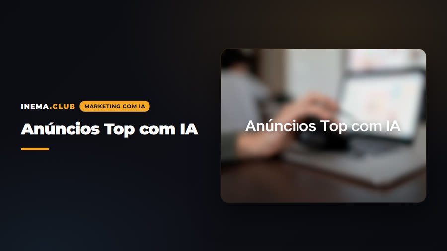

O prompt não é o trabalho. O trabalho é decidir o ângulo, congelar a identidade, dirigir o plano e auditar antes de publicar. Quatro skills fazem isso, uma decisão cada, e passam o resultado por escrito pra seguinte.
Você traz uma ideia (ou o link de um concorrente) e sai com um anúncio de 30 a 90 segundos, gerado por IA, montado e masterizado pra Meta. Cada etapa deixa um documento que a próxima lê. Por isso o sistema continua valendo quando o modelo da moda mudar.
Espiona a Biblioteca de Anúncios da Meta e devolve hooks literais, ritmo medido e o esqueleto persuasivo de quem já está pagando. Copia-se a estrutura, nunca a mentira.
Cinco perguntas, dez roteiros com mecanismos diferentes, e do escolhido um dossiê com as imagens a criar antes, o que subir e o prompt pronto pra colar. Vinte e um modos de vídeo, cinco vias de identidade.
O vídeo saiu. Conserva, edita local, estende, salva na montagem ou regenera? Uma decisão com motivo e faixa de tempo exata. É onde se para de jogar dinheiro fora.
Não há uma skill que decide tudo: há quatro, e cada uma deixa pra seguinte um documento com o que já está decidido. A de produção não reinventa a estratégia; a de edição não redirige o plano.
| De onde vem | Quem decide | O que deixa pro próximo |
|---|---|---|
| Uma conta que já anuncia | /espiona-ads | O playbook: hooks literais, ritmo medido e o esqueleto que aguenta |
| Uma ideia sua, ou esse playbook | /video-ia | Dez roteiros pra escolher; por escolhido, um dossiê com as imagens a criar, o que subir e os prompts prontos |
| O vídeo já gerado | /auditor-video-ia | Uma decisão: conservar, editar, estender, salvar na montagem ou regenerar |
| Os módulos aprovados | /anuncio-edita | O master a 1080×1920 e o SRT, prontos pra subir |
Duas se usam sempre: a que busca a ideia e a que produz. As outras duas são opcionais e existem pra economizar dinheiro quando você já está gerando. Nenhuma das quatro gasta um centavo por conta própria: o botão de gerar é seu.
A Agnes é o provedor padrão de imagem e vídeo, a custo zero. Seedance, Dreamina e similares funcionam colando o prompt na web deles: nada se configura aqui.
Onde as skills rodam. Qualquer instalação com pasta de skills de usuário.
# confere a pasta de skills ls ~/.claude/skills/
Pra espionagem (cortes, frames) e montagem (costuras, legendas, master).
ffmpeg -version ffmpeg -filters | grep -E 'subtitles|ass' # libass?
Groq pra transcrição; Agnes pra gerar a custo zero. Lidas em runtime, nunca copiadas.
export GROQ_API_KEY="sua-chave" export AGNES_API_KEY="sua-chave"
Os comandos abaixo são os que as skills usam de verdade. O que muda é a sua marca e a sua ideia.
Baixe o zip, descompacte e copie as pastas. Se o Claude Code fizer cinco perguntas ao chamar /video-ia, está instalado.
unzip anuncios-top-skills.zip cp -R skills/* ~/.claude/skills/ # espiona-ads, video-ia, auditor-video-ia, anuncio-edita
Tudo que estiver na ficha a skill deixa de perguntar. O que se vende, pra quem (uma pessoa, não um segmento), a oferta com redação exata, a prova que dá pra mostrar, o tom, as proibições, a cor de acento.
mkdir -p anuncios/marcas cp ~/.claude/skills/video-ia/marcas/_modelo.md anuncios/marcas/minha-marca.md # exemplo preenchido pra calibrar o nível de detalhe: # ~/.claude/skills/video-ia/marcas/_exemplo-oficina-do-bairro.md
Cole a URL da Biblioteca de Anúncios da Meta. A skill extrai os anúncios ativos, ranqueia por dias em circulação e variantes vivas, transcreve, mede o ritmo e devolve o playbook com banco de hooks literais.
/espiona-ads https://www.facebook.com/ads/library/?...&view_all_page_id=... # saída: anuncios/referencias-criativas/espionagem-<marca>-<data>.md
Responda o que souber; o resto a skill propõe. Ela para depois do menu e pergunta quais desenvolver. Só então vem o técnico: duração, quem aparece, plataforma. Nunca escreve prompt sem menu.
/video-ia quero um anúncio de 30 s pro meu curso de automação pra oficinas # → 5 perguntas → menu de 10 → "quais desenvolvo?" → dossiê por vídeo em # anuncios/roteiros/<data>-<conceito>.md (4 blocos: imagens, roteiro, uploads, prompts)
Na Agnes (padrão, custo zero): imagens de identidade, keyframes A e B por clipe, vídeo por interpolação, voz pelo inemavox. Nas outras: cole o prompt na web do provedor. O dossiê diz a ordem de upload, e a ordem é o binding.
# Agnes: imagens (text2img / img2img, máx. 2 refs, prompt em inglês) python3 ~/projetos/imagens-agnes/gerar.py "<prompt>" -o kf-01a.png --ratio 9:16 python3 ~/projetos/imagens-agnes/gerar.py "<prompt>" -o kf-01b.png --ratio 9:16 --ref kf-01a.png # vídeo: POST /v1/videos, mode keyframes, num_frames 8n+1 (≤481 em 720p), ≤5 req/min
Preflight do prompt (checador mecânico + gates) e postflight do MP4. Sai uma decisão única com motivo e faixa: conservar, editar local, estender, salvar na montagem ou regenerar.
python3 ~/.claude/skills/auditor-video-ia/scripts/checa-prompt.py prompt.txt --interface agnes /auditor-video-ia anuncios/criativos/oficina/clipe-01.mp4 # DECISÃO: EDITAR LOCALMENTE · Porque: … · Ação: … · Não tocar: …
Intervenção mínima: costuras, pista de voz, legendas sóbrias na cor da marca (nunca sobre a cara), letreiro de fechamento sobre o vídeo vivo, master a 1080×1920 com loudness de plataforma.
/anuncio-edita anuncios/criativos/oficina/ # N módulos → master + SRT # por dentro: python3 ~/.claude/skills/anuncio-edita/scripts/captions.py --transcript edicao/transcript.json --out edicao/captions.json --mode pages python3 ~/.claude/skills/anuncio-edita/scripts/master-audio.py --in peca.mp4 --out master.mp4 -I -14 -tp -1.0
Decisão, custo, tentativa, variável mudada, resultado. Sem isso não se aprende, se repete. O quarto anúncio funciona melhor que o primeiro porque cada peça deixou registro.
# uma linha por peça em
~/.claude/skills/auditor-video-ia/assets/registro-experimentos.csv
Tudo em markdown, legível, dentro de cada pasta. Os adaptadores por plataforma têm data: quando um número não bater com o que você vê na tela, corrija o adaptador e siga.
Extração no navegador (a Meta bloqueia curl), ranking por proxies honestos (a Biblioteca não publica gasto nem CTR), processamento com ffmpeg e Whisper, análise de frames com subagentes, veredito de IA com evidência, e o bloco obrigatório: o que é transplantável, o que com cuidado, o que não.
Entrevista em dois blocos, menu de dez com sete regras, catálogo de 21 modos, cold open com teste de sete perguntas, ritmo e orçamento de palavras por trilho, quatro blocos de textura, cinco vias de identidade, ficha de apresentador, três referências de identidade, o que se assa em imagem, adaptadores Agnes, Seedance 2.5 e Dreamina.
Preflight por interface, postflight técnico (ffprobe, amostragem visual, gates de identidade, mãos, boca, produto, texto, continuidade) e comercial (ver no mudo e no celular), tabela sintoma → causa → conserto, hierarquia de cinco decisões, transparência e consentimento, checador mecânico de prompt.
Ingestão e diagnóstico, montagem com corte seco e crossfade só no ambiente, três casos de pista de voz, legendas em pastilha com karaokê sutil (via libass ou overlay por PNG), letreiro de fechamento, master EBU R128, menu de intervenções opcionais com critério de editor.

# O estagiário invisível · 30 s · Agnes ## 1 · Imagens que você precisa criar antes de gerar kf-01a / kf-01b: notebook sozinho no escritório escuro… ## 2 · Roteiro pra ler em voz alta «Faz quatro horas que eu tô esperando você decidir.» (9 palavras) ## 3 · O que subir e em que ordem 1ª @Image1 kf-01a · 2ª @Image2 kf-01b ## 4 · Prompts pra copiar e colar [MOTION] the camera pushes in slowly while the screen fills…
O plano do curso está no repo (PLANO-CURSO.md): sete módulos, um anúncio que atravessa todos eles, formato INEMA v2.